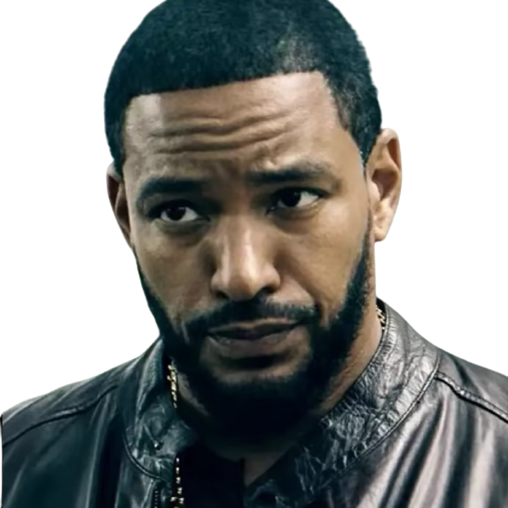

The Boys
-
Billy Bruto
Billy Bruto é o principal protagonista masculino da série. Ele é um ex-agente secreto britânico que lidera um grupo de vigilantes conhecido como "The Boys", cujo objetivo é expor e enfrentar os super-heróis corruptos que abusam de seu poder e influência.Billy é retratado como um homem rústico, rude, e muitas vezes violento, que não se importa em quebrar regras para atingir seus objetivos. Ele é astuto, inteligente e sempre tem um plano para lidar com qualquer situação. Ele é conhecido por seu senso de humor sarcástico, sua língua afiada e seu amor por charutos.
-
Hughie Campbell

Hughie Campbell é um dos personagens principais da série.A vida de Hughie muda drasticamente quando sua namorada, Robin, é morta por um super-herói chamado "Trem Bala", pertencente à equipe "The Seven". Desesperado para se vingar da morte de Robin, Hughie é recrutado pelo líder dos "The Boys", Billy Bruto, para ajudá-lo em sua missão de expor e acabar com os super-heróis corruptos.Hughie é um personagem gentil e ingênuo, muitas vezes atuando como o coração e a consciência do grupo. Ele é um pouco inseguro e muitas vezes duvida de sua capacidade de lidar com as situações perigosas em que se encontra. No entanto, ao longo da série, ele se torna mais confiante e ousado em sua busca por justiça.
-
Francês
Francês ele é um ex-soldado das forças especiais francesas e é especialista em eletrônica e tecnologia. Ele se junta ao grupo liderado por Billy Butcher em sua missão de derrubar os super-heróis corruptos da Corporação Vought.O Francês é conhecido por seu sotaque forte e sua personalidade reservada e misteriosa. Ele é um membro valioso da equipe, muitas vezes usando suas habilidades tecnológicas para ajudar em missões e planejamentos. No entanto, ele também tem uma personalidade difícil e muitas vezes entra em conflito com outros membros da equipe.A história de fundo do personagem é explorada na segunda temporada, revelando seus traumas pessoais e sua luta constante contra seus demônios internos. No geral, o Francês é um personagem complexo e interessante, que contribui para a trama da série de maneiras significativas.
-
Kimiko

Kimiko é originária de uma área de guerra, onde experimentou violência e trauma extremos. Como resultado, ela sofre de PTSD e expressa sua dor através da fala limitada e da violência física. Kimiko também é uma super-heroína com habilidades sobrenaturais, incluindo força, velocidade e cura rápida. Ela é frequentemente retratada como uma lutadora habilidosa e letal e tem um senso de justiça que a motiva a lutar contra a injustiça corporativa e a corrupção. Ao longo da série, Kimiko desenvolve relacionamentos com outros personagens principais e luta com seu passado doloroso enquanto tenta encontrar seu lugar em um mundo caótico e perigoso.
-
Luz Estrela

Luz Estrela é uma personagem muito carismática e encantadora, que é adorada pelos fãs e pelo público em geral. Ela é uma super-heroína com poderes de controle de luz, que é recrutada pela Vought International para fazer parte do grupo "Sete". No entanto, ao longo da série, é revelado que ela tem um passado traumático e sofre de transtorno de estresse pós-traumático devido a abusos sexuais cometidos pelos membros da "Sete". Ela acaba se tornando uma aliada dos protagonistas enquanto luta contra a Vought e a corrupção dos super-heróis.
-
Leitinho
Leitinho é um membro da equipe dos Boys, que são um grupo de vigilantes que combatem super-heróis corruptos em um mundo onde esses super-heróis são celebridades e são considerados acima da lei.O nome de Milk vem do fato de que ele sempre carrega consigo um frasco de leite materno, que ele acredita ser a chave para manter sua saúde e imunidade em dia. Ele é um soldado habilidoso e um estrategista astuto, tendo servido anteriormente nas Forças Armadas dos EUA antes de se juntar aos Boys.Além disso, Milk é um personagem profundamente moral, que está comprometido em fazer o que é certo, mesmo que isso signifique lutar contra inimigos poderosos e enfrentar grandes desafios. Ele é um dos personagens mais respeitados na equipe e é frequentemente visto liderando a equipe em missões perigosas.